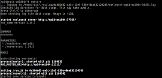

Welcome to Ros_Training
โปรแกรมสำหรับดาวร์โหลด https://github.com/ohmranger/src.
การติดตั้งโปรแกรม ROS_Melodic
1.1 เข้าไปที่เว็บไซต์หลักของ ROS และติดตั้งจากคำสั่งของ ROS หรือเปิด Terminal ctrl+alt+T แล้วคัดลอกคำสั่งลงไป
- ขั้นเตรียม
sudo sh -c 'echo "deb http://packages.ros.org/ros/ubuntu $(lsb_release -sc) main" > /etc/apt/sources.list.d/ros-latest.list'
sudo apt-key adv --keyserver 'hkp://keyserver.ubuntu.com:80' --recv-key C1CF6E31E6BADE8868B172B4F42ED6FBAB17C654`
sudo apt update
- ขั้นติดตั้ง
sudo apt install ros-melodic-desktop-full
- ทำการ Initialize rosdep
sudo rosdep init
rosdep update
- ทำการ Environment setup
echo "source /opt/ros/melodic/setup.bash" >> ~/.bashrc
source ~/.bashrc
source /opt/ros/melodic/setup.bash
- ทำการติดตั้ง Dependencies สำหรับการ building packages
sudo apt install python-rosinstall python-rosinstall-generator python-wstool build-essential
sudo apt-get install ros-melodic-joy ros-melodic-teleop-twist-joy ros-melodic-teleop-twist-keyboard ros-melodic-laser-proc ros-melodic-rgbd-launch ros-melodic-depthimage-to-laserscan ros-melodic-rosserial-arduino ros-melodic-rosserial-python ros-melodic-rosserial-server ros-melodic-rosserial-client ros-melodic-rosserial-msgs ros-melodic-amcl ros-melodic-map-server ros-melodic-move-base ros-melodic-urdf ros-melodic-xacro ros-melodic-compressed-image-transport ros-melodic-rqt-image-view ros-melodic-navigation ros-melodic-interactive-markers ros-melodic-driver-base ros-melodic-image-transport ros-melodic-image-publisher ros-melodic-vision-msgs ros-melodic-rospy-message-converter ros-melodic-dwb-critics ros-melodic-costmap-queue
ทดสอบโปรแกรมหลังจาการติดตั้ง ROS
1.2 ทดสอบ ROS โดยเปิด Terminal ขึ้นมา ctrl+alt+T
roscore
จะปรากฎดภาพดังรูป

Note
หากเกิด ERROR ให้ติดตั้งที่ ROS หลัก